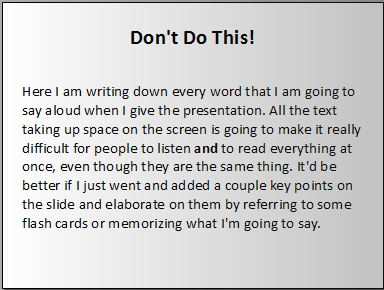
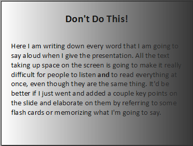

Question 1.
The following image was modified to remove yellow from the background such that the background is now white with the text preserved as is using Adobe Photoshop.
Several methods could have been used to achieve the desired result such as using the color replacement tool in Photoshop.
However, the magic wand tool was chosen to replace the yellow background in this case.
Question 2.

A threshold of 97 was used to achieve a solid white background, as this threshold maintained the sharpness and clarity of the text while allowing the background to be perfect white in color.
While a slightly higher threshold resulted in the font having more weight upon testing, this resulted in the introduction of bolded letters throughout the passage that took away from the original look.

Question 3.

Thresholding the following image to achieve a perfect white background was a more difficult task than the previous examples due to the larger difference in the background gradient's
lightest and darkest points. Using the threshold adjustment tool in Photoshop, there were no outcomes that did not have a black bar on the right-hand side of the image with the text still legible. However, a threshold of 80
presented the best outcome such that the text was still legible without being covered with the dark bar.
The thresholded image could have further been enhanced with Photoshop's dodge tool, and slightly was in areas where letters on the edge of the passage were covered by the dark bar. However, to preserve the impact of
thresholding the sample image, very limited use was made of this tool.
Question 4.

A threshold of 125 was used to achieve the wanted effect. While a lower threshold would have further lightened the texture of the paper framing the text, the 125 threshold allowed the
archaic style of the document to be preserved even after thresholding, while keeping the text bold and legible. Because using this threshold allowed the character of the document to be
kept intact, it was the best choice for achieving this particular goal.
Increasing the threshold by a value of about 10 caused the texture to eclipse the text, rendering it unreadable. Decreasing the threshold gradually removed any trace of the
document's texture, removing the character it had, and then gradually lightened the text such that it became unreadable. Depending on one's goal, there can be multiple 'best' thresholds;
a greater threshold would allow more of the texture to be visible at the expense of the font's legibility, while a lower threshold would allow, up to a point, better readability
of the text at the expense of the original photo's character.
Question 5.

Applying the 'Refine Edge' edge detection algorithm from Photoshop to this image allows adjustment of smoothness, contrast, and the radius of the edges of a selection, which would
be outputted as a new layer or layer mask to better blend as a foreground object over a new background layer in a typical use case.
What is affected depends on the selections made before applying this algorithm. If the white background is selected and the selection is inverted, the algorithm affects the edges
of only the lines forming the 'X' and the outer edges of the black rectangle. If the gray rectangle is selected, the edges of only the grey rectangle are affected. In short, only what is selected
using a selection tool such as Photoshop's magic wand tool is affected. The impacts and intensity of the effects this algorithm applies on the edges of selected objects is fully under the user's control.
Areas around the edges can be viewed as the onion skin effect or as a colored overlay, or the edges themselves can be highlighted with a marching ants effect while in edit mode.
Question 6.
The noise reduction algorithm applied to the first image was the 'Dust and Scratch' filter in Photoshop with a radius of 1 and a threshold of 8. While this algorithm did indeed remove the noise from the original photograph, it failed
at preserving any clarity or detail that the original image had, due likely to its resolution, as this algorithm requires images with more data to successfully fulfill its intended purpose. The Dust and Scratch filter works by blurring
noise, dust, or scratches in the photo by detecting harsh transitions in tone.
Combining this algorithm with masking and the healing brush tool in Photoshop helped achieve a much more desirable result, as demonstrated by this image. Noise reduction through the use of the healing brush tool works by pattern
matching the texture of the pixels to which the tool is being applied with the texture of surrounding pixels. In higher resolution images, this method may fail by introducing visible smudging, artifacting, or blurriness.
Another noise reduction algorithm which can be used in Photoshop is the despeckle algorithm which works by decreasing the contrast of dust and noise to reduce its noticeability in the image. While this alogirthm does make
the noise less pronounced, it fails at completely removing it and also reduces clarity quite a bit, though not as drastically as the Dust and Scratch algorithm.